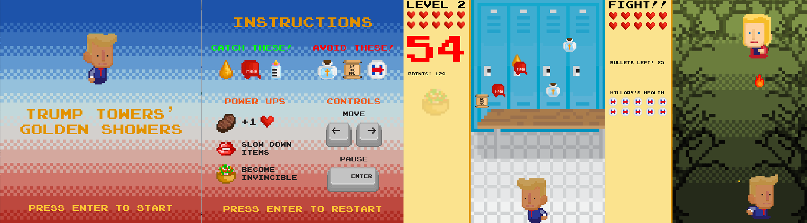
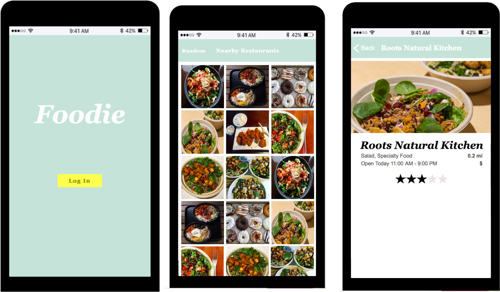

Higher Logic is a cloud-based community platform - or in simpler terms, a Facebook-esque website platform for associations. I spent the last year at Higher Logic on the Integrations team, where I handled technical customer support as well as implementation of per client integrations.
Assignments included debugging and creating custom user providers in C# with Visual Studio, managing databases and building multi-line and multi-join SQL queries, designing and deploying SSRS reports, as well as building smaller C# console applications to help with migrations and mass uploads.
I am grateful for my unique experience at Higher Logic that allowed me to not only develop technical skills, but client-facing skills as well.

Trump Towers' Golden Showers was my final group project for CS 4730 - Computer Game Design Spring 2017 at University of Virginia. The class required building your own 2D video game engine in Java, implementing basic physics, tweening, and other video game mechanics.
TTGS is a basic fall-and-catch 2D video game. In the first three levels, you can move left and right to collect the falling objects. Trump will have to survive 3 levels: Trump Towers, a locker room, and the white house. Afterwards, he will have to fight Hillary Clinton, who is shooting fireballs at him. Power-ups and collectables include well-cooked steak, MAGA hats, taco salad, baby bottles, kisses from Ivanka, and others. Items such as holy water and the constitution will damage you.
Every semester, all of the student projects of CS 4730 are featured in a free video game expo for all UVA students and faculty to see. Our project won Audience Favorite through a 3 ticket voting system, resulting in some sweet Amazon gift cards.

Foodie is an iOS app that lets users see images of food in their local area to find new restaurants. The idea of our application is that our hunger is often visual. Foodie uses the GPS coordinates of the user's phone to call the Yelp API and populate an image grid with photos of food. This was my final group project from CS4720 Fall 2016 Mobile App Development at University of Virginia.
When the application first starts, the user is prompted to log in with Google account. Afterwards, the application stores the Google account information to local storage and uses this to welcome the user. The user then sees an image grid view that is populated with images from a Yelp API call based on the GPS coordinates of the phone.
Clicking on an image takes the user to a restaurant information screen that shows the restaurant name, categories, distance, address, rating, and an image of the restaurant. Clicking “random” prompts a message that tells the user that if they shake the device while on the grid view screen that a random nearby restaurant information page will show. Shaking the device prompts this segue.


{kind=link}